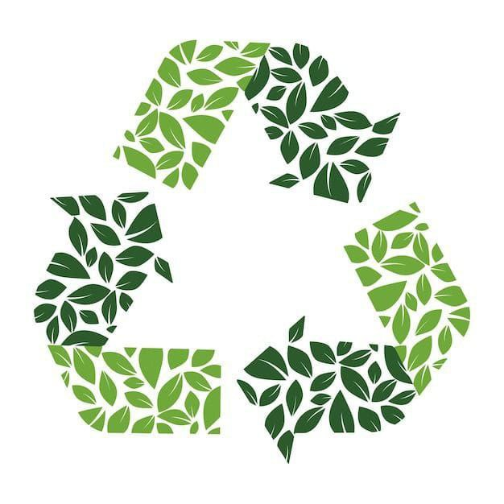

ليست_قمامتي_ولكنها_مدرستي#

"ليست قمامتي، لكنها مدرستي" هو موقع تعليمي يقدم مقالات وفيديوهات عن إعادة التدوير، مع نصائح لتحويل النفايات إلى منتجات مفيدة بهدف تعزيز الاستدامة البيئية"
.اضغط على الأيقونات لمعرفة كيفية إعادة تدوير كل منتج
تم إنشاء هذا الموقع بواسطة
مريم إيهاب،
إيمانًا بأهمية إعادة التدوير ودوره في بناء بيئة نظيفة ومستدامة للجميع